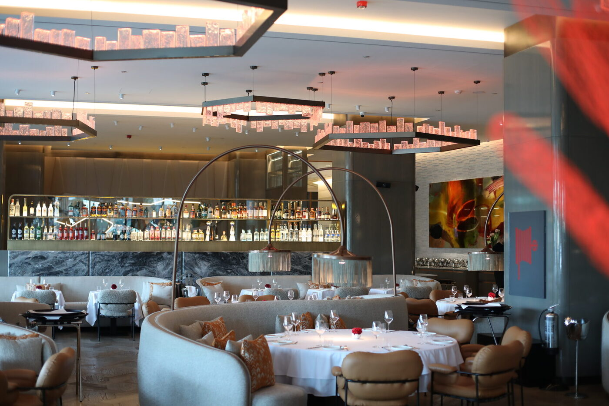
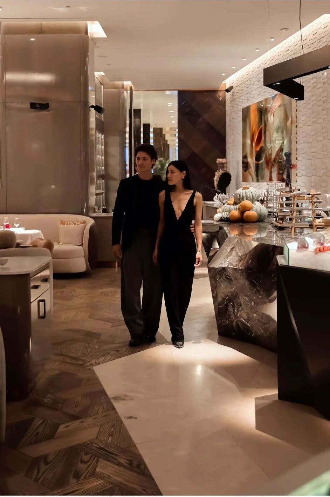
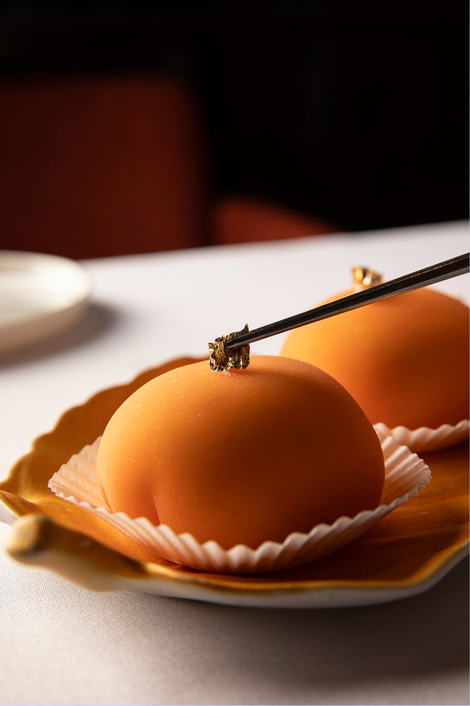
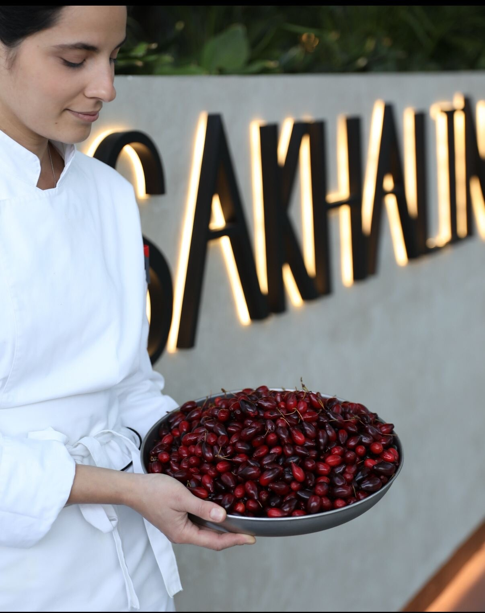
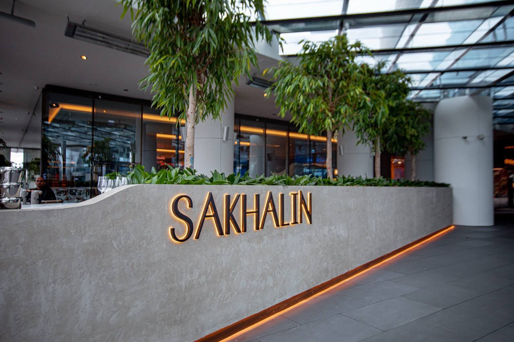

Визуальный и вербальный код
Выстроили Instagram с нуля: архитектура ленты, логика stories, язык блюд, tone of voice и подача, вдохновлённая гастрономической критикой.
Полный цикл маркетинга для премиального гастрономического проекта в Стамбуле — от визуального кода и tone of voice до событий, партнёрств и репутации.
Кейс Sakhalin Istanbul. Результаты, подход и объём работы — публичны.
Задача была не собрать охваты. Задача была создать бренд, к которому хочется вернуться.

Премиальный ресторан международной гастрономической группы в Стамбуле. Fine dining-концепция с сильной авторской кухней, запущенная на одном из самых конкурентных ресторанных рынков города.
Передать премиальный опыт Sakhalin İstanbul и связать контент, события, инфлюенсеров и репутацию с интересом гостей к ресторану.
С марта 2023 · продолжаем работу
Международная ресторанная группа · Стамбул · Маркетинг Sakhalin Istanbul
У проекта была сильная гастрономическая ДНК и амбиция стать заметным местом в городе. Но в премиальном сегменте недостаточно показать блюдо, интерьер и красивый вечер.
Нужно было создать узнаваемый язык, объяснить ценность без прямых продаж и выстроить вокруг ресторана среду: гостей, гастрономических экспертов, бренды-партнёры и поводы возвращаться.
Мы не строили контент-план. Мы строили культурный код бренда.Решение Digital Clever
Выстроили Instagram с нуля: архитектура ленты, логика stories, язык блюд, tone of voice и подача, вдохновлённая гастрономической критикой.
Адаптировали смыслы и визуальный ритм под турецкую аудиторию, сохранив международную ДНК и ощущение fine dining.
Продюсировали ужины, сезонные запуски, коллаборации с брендами, миксологами, блогерами и гастрономическими экспертами.
Reels строились не вокруг прямого призыва, а вокруг состояния: текстура, звук, подача, взгляд, движение и желание оказаться внутри.



Когда бренд говорит своим языком, люди начинают передавать его друг другу — без просьбы и скидки.
За первые шесть месяцев работы проекта.
Кампании продавали не столы, а желание быть частью события.
Контент стал собственным медиа проекта.
Не ждём готового ТЗ на каждый пост. Сами находим поводы, форматы и точки роста.
Знаем, как говорить с турецкой аудиторией и как сохранить характер международного бренда.
Каждая съёмка, публикация, кампания и коллаборация работает на одну большую задачу — рост бренда.
Расскажите, что вы строите в Турции. В течение 24 часов отправим предварительное предложение с форматом работы и ориентиром бюджета.
Обсудить проект
Расскажите о бизнесе и цели. Ответим в течение 24 часов.